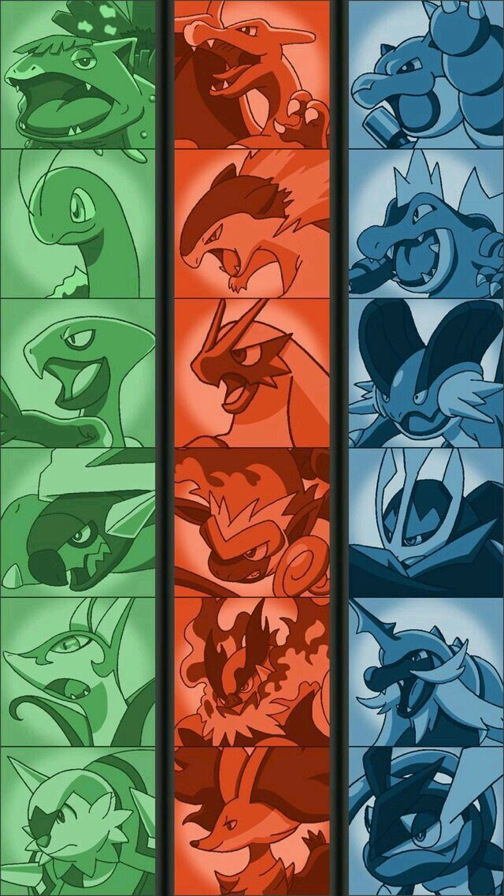

¡Bienvenido a la StartDex!

Pokémon iniciales, ¿Quién no conoce a alguno de ellos?
Si eres de esas personas que no sabe nada acerca de los pokémon iniciales, este sitio es para tí. Aquí podrás encontrar informacion variada sobre sus características, sus apariencias, estadisticas en los videojuegos de la saga original, etc.
Podrá encontrar a los iniciales desde la primera generación, hasta la sexta generación, por lo tanto, y de momento, no estarán incluidos las generaciones 7, 8, y 9.
Una vez dicho esto, muchas gracias por su visita y espero que la informacion sea de utilidad o de interés para usted.